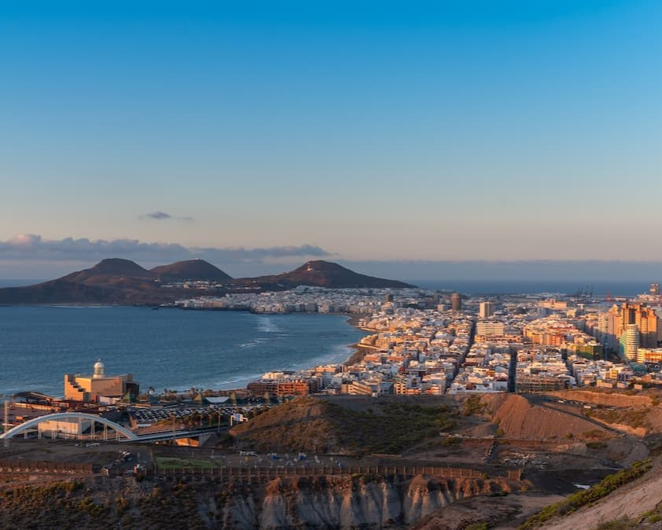
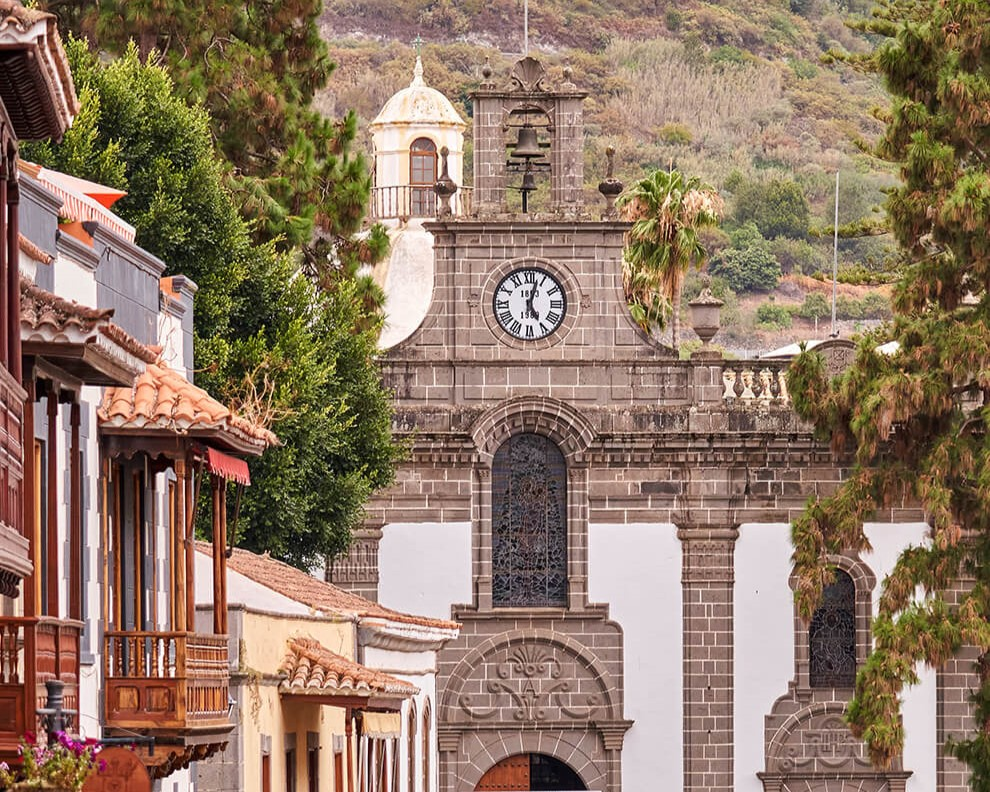
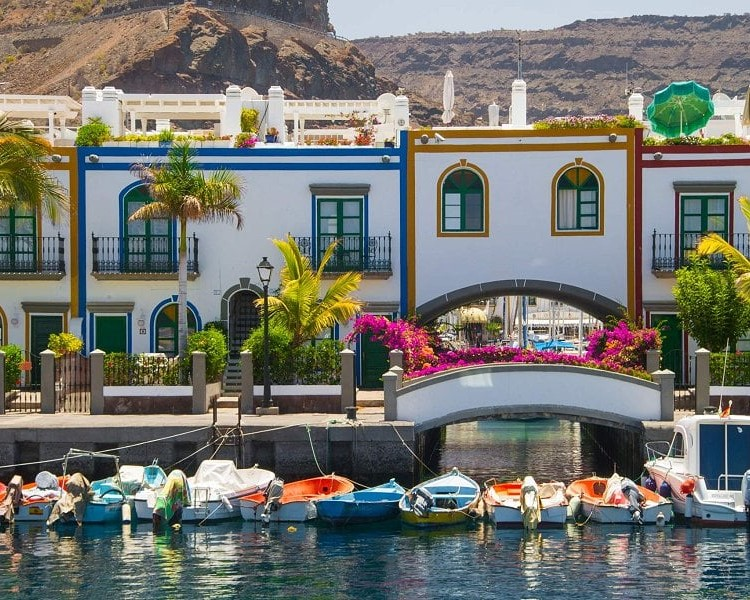
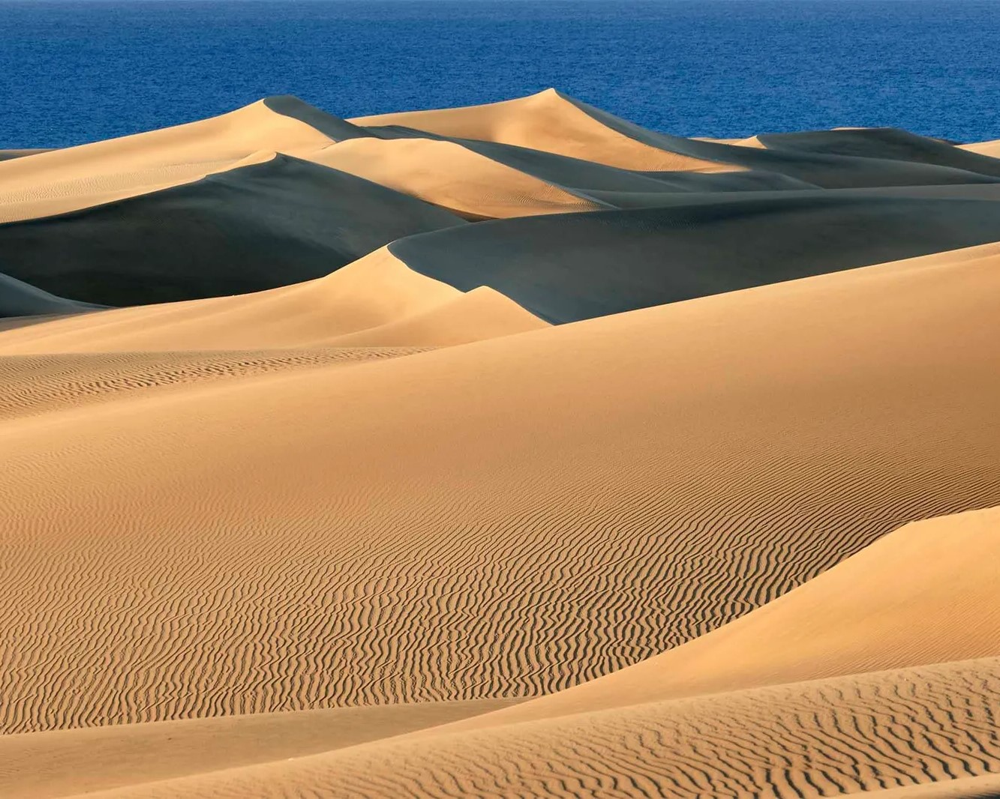
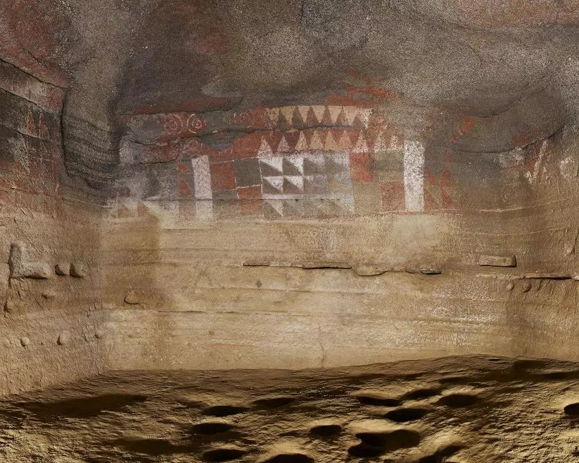
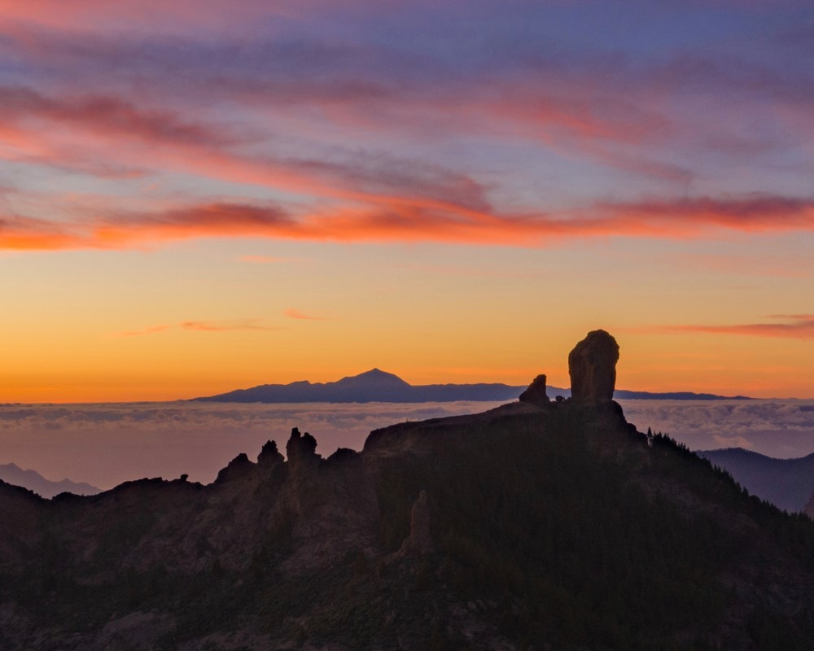
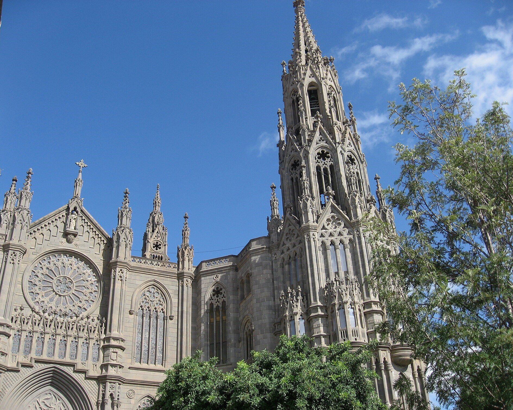
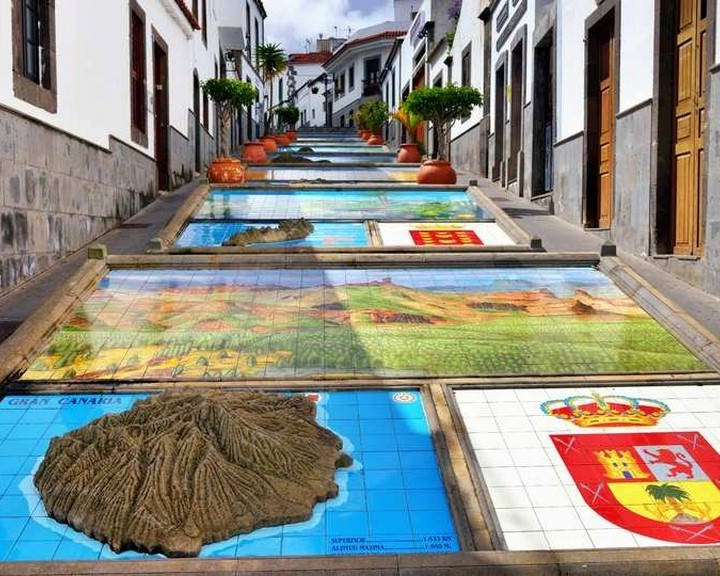
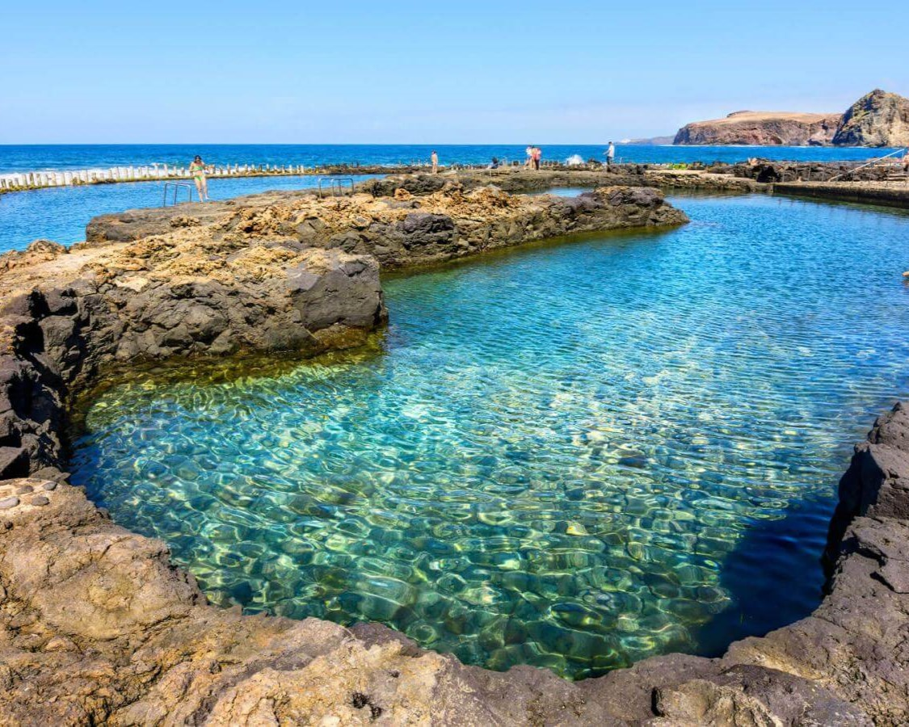
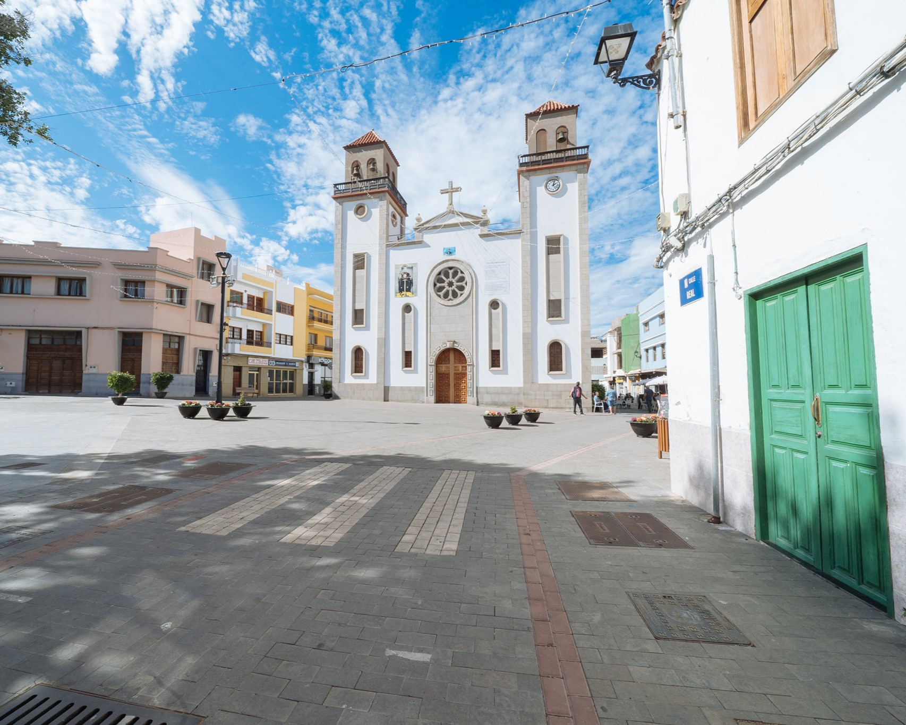

¡¡¡ Nos casamos !!!
- La Ceremonia
- Cómo llegar
- Alojamiento
- La Luna de Miel
- Acompáñanos
Te esperamos a las 13:00 del día

La Ceremonia
Cómo llegar
El Parador se encuentra en el término municipal de Tejeda, reconocido como uno de los pueblos más bonitos de España. Famoso por sus almendros, está asentado sobre las laderas de un cráter. No puedes marcharte sin visitar la Cruz que da nombre al Parador y marca el centro geográfico de la isla.


Alojamiento
La Luna de Miel
Acompáñanos
Por la isla te vo'a dar una vuelta
Las Palmas de Gran Canaria
¿Buscas sol, historia y cultura? Las Palmas de Gran Canaria tiene todo lo que necesitas. Sumérgete en la historia del Barrio de Vegueta, un tesoro arquitectónico con joyas como la Catedral de Santa Ana y el Museo Canario.
Relájate en la vibrante Playa de las Canteras, perfecta para nadar, tomar el sol y disfrutar de la vida local. Explora la animada Calle Triana y encuentra tiendas únicas y restaurantes deliciosos.
Admira la arquitectura moderna del Auditorio Alfredo Kraus y del Castillo de la Luz, un lugar histórico con vistas panorámicas. Permítete perderte en los jardines del Parque de Santa Catalina y disfruta de un paseo por el animado Mercado de Vegueta.
Teror
¡El corazón religioso de Gran Canaria! Teror te espera con los brazos abiertos. Sumérgete en la profunda espiritualidad de la Basílica de la Virgen del Pino, patrona de Gran Canaria, y admira su impresionante arquitectura barroca.
Pasea por el encantador centro histórico de Teror, con sus calles empedradas, casas señoriales y plazas llenas de encanto. Disfruta de un café en la animada Plaza de Teror y descubre la tradición perfumista de la isla en la Casa del Perfume Canario.
Teror es mucho más que religión y tradición. Explora la Finca de Osorio, un espacio cultural donde se organizan exposiciones y eventos. ¡Y no te pierdas la calle Real de la Plaza! Perfecta para encontrar souvenirs únicos y productos locales.
Mogán
¡La Pequeña Venecia de Gran Canaria! Mogán te ofrece una combinación perfecta de naturaleza, cultura y relax. Permítete cautivar por el encanto de Puerto de Mogán, conocido como la "Pequeña Venecia" por sus canales y puentes.
Relájate en sus playas de aguas cristalinas, como Anfi del Mar y Amadores, ideales para tomar el sol y practicar deportes acuáticos. Explora la rica historia de la isla en la Cañada de los Gatos y disfruta de las vistas panorámicas desde el Mirador de El Mulato.
Mogán es mucho más que sol y playa. Descubre su patrimonio cultural visitando el molino de viento y la iglesia de San Antonio de Padua. ¡Y no te pierdas los mercados locales! Perfectos para encontrar productos frescos y artesanías.
Maspalomas
Maspalomas te espera con sus impresionantes Dunas de Maspalomas, un mar de arena dorada que se adentra en el océano Atlántico. Relájate en sus playas, como la Playa de Maspalomas y la Playa del Inglés, y disfruta de las vistas panorámicas desde el Faro de Maspalomas.
Maspalomas es sinónimo de diversión. Explora el animado Yumbo Centrum con sus tiendas, restaurantes y espectáculos. La oferta de Maspalomas es variada: disfruta de los deportes acuáticos, explora la costa en barco, practica senderismo por las dunas o simplemente relájate en la playa.
Gáldar
¡Un viaje al corazón de la historia canaria! Sumérgete en el pasado aborigen de la isla visitando la Cueva Pintada, una joya arqueológica única con impresionantes pinturas rupestres.
Pasea por el encantador centro histórico de Gáldar y admira la impresionante arquitectura de la Iglesia de Santiago de los Caballeros. ¡Y no te pierdas el drago centenario! Un símbolo de la longevidad y la naturaleza canaria. Explora la Caldera de los Pinos, un cráter volcánico con una rica biodiversidad. ¡Y disfruta de las vistas panorámicas desde el Mirador de Pinos de Gáldar!
Gáldar te ofrece una experiencia inolvidable. Relájate en sus tranquilas playas, como la Playa de Sardina del Norte, disfruta de su rica gastronomía y sumérgete en su ambiente acogedor.
Tejeda
Tejeda te ofrece un paisaje único y cautivador, con roques majestuosos como el Roque Nublo y el Roque Bentayga que dominan el horizonte. Permítete perderte por la Caldera de Tejeda y disfruta de las vistas panorámicas desde la Cruz de Tejeda.
Tejeda te ofrece una experiencia inolvidable. Realiza senderismo por senderos espectaculares, observa la rica avifauna de la caldera, disfruta de la gastronomía canaria y descubre la artesanía local.
Arucas
Arucas te espera con los brazos abiertos. Sumérgete en la historia visitando la impresionante Iglesia de San Juan Bautista, una joya arquitectónica que te transportará al pasado.
Pasea por el casco histórico de Arucas y admira la belleza de sus casas de colores y sus calles empedradas. ¡Y no te pierdas la Fábrica de Ron Arehucas! Descubre el proceso de elaboración de este famoso ron y disfruta de una degustación.
Arucas es mucho más que historia y ron. Asciende a la Montaña de Arucas y disfruta de unas vistas panorámicas espectaculares
Firgas
Firgas te ofrece un ambiente relajado y una belleza natural inigualable. Pasea por el encantador Paseo de Canarias y admira la arquitectura tradicional canaria.
¡Firgas es un balcón natural! Disfruta de las vistas panorámicas desde los miradores y sumérgete en la naturaleza del Barranco de Las Madres. Relájate en los refrescantes Charcones y siente la fuerza de la naturaleza.
Agaete
Agaete te ofrece un paisaje único y cautivador, con el majestuoso Dedo de Dios como testigo. Permítete perderte por el casco histórico y admira la belleza de la Iglesia Matriz de Nuestra Señora de la Concepción.
Agaete es mucho más que naturaleza. Saborea el auténtico café de Agaete, relájate en el pintoresco Puerto de las Nieves, disfruta de un baño en las piscinas naturales o explora el Barranco de Guayedra. ¡Y no te pierdas la oportunidad de conocer el Parque Arqueológico del Maipés y descubrir los secretos de sus antiguos pobladores!
La Aldea de San Nicolás
La Aldea de San Nicolás te ofrece un entorno único y auténtico. Permítete perderte por las calles empedradas del casco histórico y admira la arquitectura tradicional canaria.
La Aldea es un paraíso para los amantes de la naturaleza. Recorre el impresionante Andén Verde con sus vistas panorámicas, explora el Barranco de Tocodomán o relájate en la Playa de La Aldea. ¡Y no te pierdas la oportunidad de visitar el Túmulo Funerario del Lomo de Caserones y descubrir los secretos de sus antiguos pobladores!